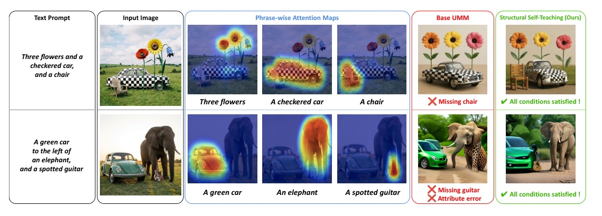
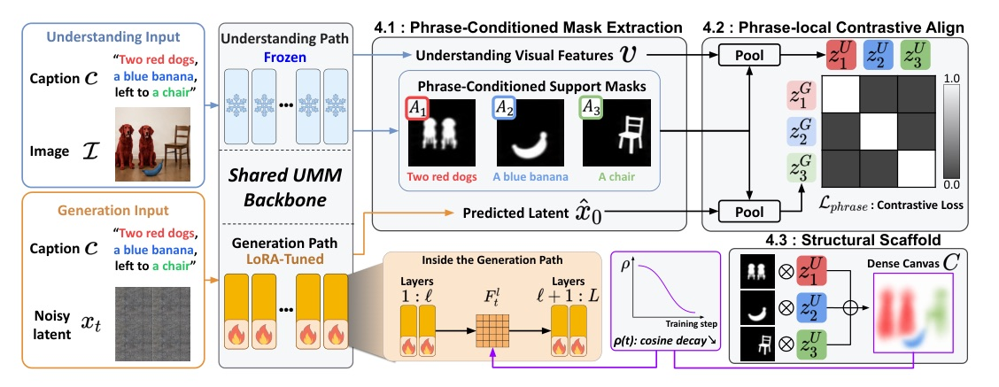
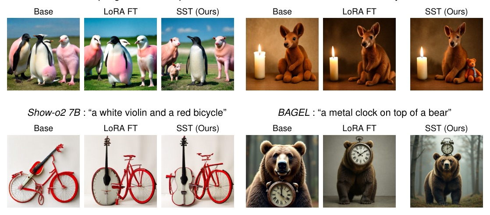
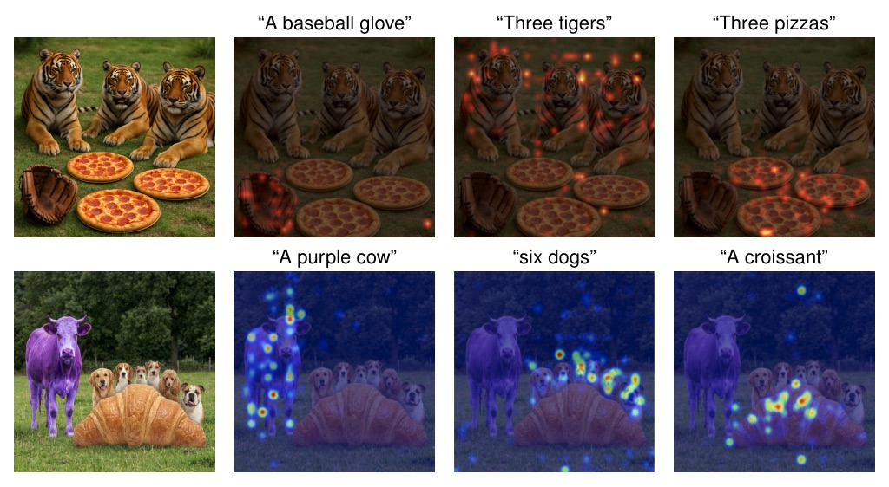
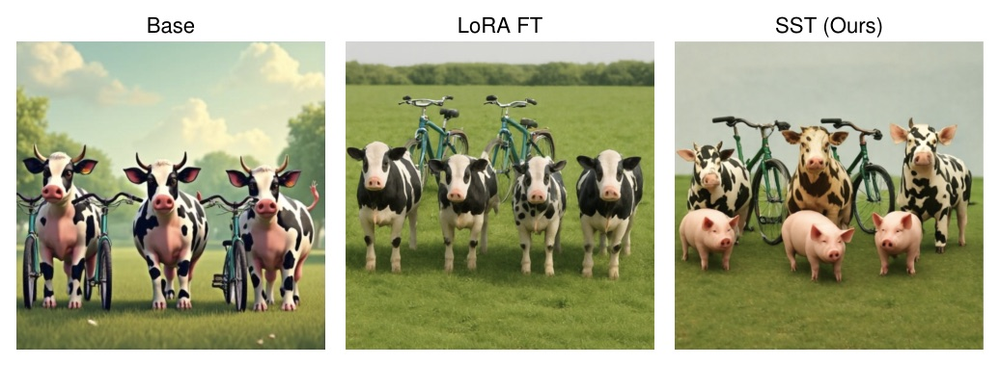

論文：Structural Self-Teaching for Compositional Generation in Unified Multimodal Models（arXiv 2611.18261v1，cs.CV）· venue 依 arXiv comment 自註；arXiv API 今日 429，標題作者取自 PDF p.1
UMM 看得懂的東西比它畫得出的多。SST 把理解路徑對每個名詞片語的 attention 萃成 soft mask，訓練時用兩條路教生成路徑：phrase-local 對比對齊（每個片語區域對齊目標圖同一區域、推開同 prompt 其他片語）與 漸退 scaffold（mask 拼成片語 canvas 注入早層，訓練中逐步關掉）。推論時全部拿掉。GenEval2 GM 在四個 UMM 上都贏同資料 LoRA FT，BLIP-3o 4B 13.00→16.13。

軸 1：組合資訊
軸 2：空間定位

流程
相對 Kang et al. [8] 的兩個改動
| Head 選擇 | Soft 聚合 | AIR | Pt |
|---|---|---|---|
| global（[8]） | — | 0.321 | 0.603 |
| per-phrase | — | 0.371 | 0.645 |
| per-phrase | ✓ | 0.411 | 0.718 |
| BLIP-3o（cascaded DiT） | Show-o2（LLM + diffusion head） | BAGEL（LLM-as-DiT） | |
|---|---|---|---|
| Student feature | x̂0（EVA-CLIP 空間） | patchified x̂0（VAE latent） | LLM 最後 hidden state |
| Reference feature | EVA-CLIP feature | unified visual representation | SigLIP feature |
| LoRA 模組 | DiT cross-attention | diffusion head | 每層 generation MoE |
| Scaffold 注入點 | 第一個 NextDiT block | 第一個 diffusion_head_a | 第一層 LLM（只動 latent token） |
| Backbone | Base GM | LoRA FT AM | LoRA FT GM | SST AM | SST GM |
|---|---|---|---|---|---|
| BLIP-3o 4B | 11.78 | 54.70 | 13.00 | 58.29 | 16.13 |
| BLIP-3o 8B | 13.50 | 60.48 | 14.86 | 61.82 | 16.47 |
| Show-o2 7B | 15.32 | 63.42 | 16.03 | 64.28 | 17.11 |
| BAGEL 14B | 19.65 | 73.01 | 26.47 | 74.06 | 27.33 |
| BLIP-3o 4B | Object | Attribute | Count | Position | Verb |
|---|---|---|---|---|---|
| Base | 77.94 | 52.87 | 30.72 | 35.06 | 15.44 |
| LoRA FT | 76.62 | 54.24 | 31.64 | 36.33 | 13.37 |
| SST | 81.29 | 54.49 | 37.17 | 41.53 | 17.03 |
GenEval++（GPT-4.1 judge，全部條件滿足才算對）
| Backbone | Base | LoRA FT | SST |
|---|---|---|---|
| BLIP-3o 4B | 25.71 | 26.43 | 30.71 |
| BLIP-3o 8B | 30.71 | 31.79 | 33.57 |
| Show-o2 7B | 16.79 | 18.21 | 19.64 |
| BAGEL | 38.21 | 45.00 | 46.79 |
統計檢定
| Method | 4B GM | 4B Count | 4B Position | BAGEL GM | BAGEL Position |
|---|---|---|---|---|---|
| LoRA FT | 13.00 | 31.64 | 36.33 | 26.47 | 52.71 |
| Phrase-local only | 15.42 | 35.77 | 37.98 | 27.12 | 52.78 |
| Scaffold only | 14.43 | 33.12 | 38.67 | 26.79 | 53.92 |
| Full SST | 16.13 | 37.17 | 41.53 | 27.33 | 54.21 |
增益來自「片語內容 ↔ 空間區域」綁對，不是多了一條 conditioning 通道。打亂綁定的 canvas 比完全沒有 scaffold 還差。
| Canvas 控制組 | 保留空間結構？ | 綁定正確？ | GM |
|---|---|---|---|
| No scaffold | — | — | 15.48 |
| Uniform | ✗ | — | 15.37 |
| Shuffled | ✓ | ✗ | 14.69 |
| Full（SST） | ✓ | ✓ | 16.05 |
Uniform 移除空間結構 → 與無 scaffold 持平；Shuffled 保留空間形狀但片語-區域亂配 → 掉到 14.69。容量假說被排除。
注入層（BLIP-3o 4B）
| Layer | Position | GM |
|---|---|---|
| No scaffold | 38.27 | 15.48 |
| 0 | 41.57 | 16.05 |
| 3 | 40.79 | 15.86 |
| 7 | 40.05 | 15.45 |
| 11 | 39.46 | 15.52 |
越後面越差：要在生成路徑在一次 forward 內決定空間 layout 之前調變。
Dropout schedule
| Schedule | Position | GM |
|---|---|---|
| No scaffold | 38.27 | 15.48 |
| Fixed ρ=1.0 | 38.14 | 14.28 |
| Fixed ρ=0.5 | 40.15 | 15.76 |
| Fixed ρ=0.25 | 39.24 | 15.32 |
| Decay of ρ | 41.57 | 16.05 |
ρ=1.0（永遠開著、推論卻拿掉）比不用還差：典型 train/test mismatch。
| Mask 來源（BLIP-3o 4B） | AM | GM | Count | Position | Verb |
|---|---|---|---|---|---|
| None（LoRA FT） | 54.56 | 13.35 | 31.40 | 36.29 | 13.60 |
| Grounded-SAM（外部） | 59.58 | 16.84 | 35.28 | 40.52 | 18.64 |
| Attention-derived（SST） | 58.34 | 16.05 | 37.32 | 41.57 | 16.29 |
λ（Lphrase 權重）
生成多樣性（每 prompt 4 張，兩兩距離）
| BLIP-3o 4B | LPIPS | DINOv2 |
|---|---|---|
| Base | 0.321 | 0.127 |
| LoRA FT | 0.283 | 0.098 |
| SST | 0.317 | 0.123 |
BAGEL 上 LPIPS 兩者相近（0.628 vs 0.626），DINOv2 SST 較高（0.256 vs 0.243）。



UMMs exhibit a persistent asymmetry in which they understand more reliably than they generate
UMM 存在持續的不對稱：理解比生成可靠§2.1 p.3
The in-prompt negatives keep distinct phrases from collapsing onto one representation
同 prompt 內的負樣本讓不同片語不會塌成同一個表徵§4.2 p.6
the benefit derives from correctly binding phrase content to spatial support, rather than from added conditioning capacity alone
增益來自把片語內容正確綁到空間區域，而不只是多了條件容量§5.3 p.9
The result supports scaffold dropout as a training-time curriculum rather than a persistent conditioning pathway
結果支持把 scaffold dropout 視為訓練期 curriculum，而非常駐的條件通道§5.3 p.9
Coarse supports from the understanding path suffice for SST, without an external segmentation model
理解路徑給的粗略 support 就足以支撐 SST，不需要外部分割模型§5.3 p.8
| Method | 3 | 4 | 5 | 6 | 7 | 8 | 9 | 10 |
|---|---|---|---|---|---|---|---|---|
| BLIP-3o 4B LoRA FT | 39.34 | 28.24 | 14.65 | 10.71 | 4.33 | 3.46 | 1.90 | 1.44 |
| BLIP-3o 4B SST | 47.41 | 33.19 | 16.92 | 14.43 | 5.72 | 4.53 | 3.93 | 2.92 |
| BAGEL LoRA FT | 59.89 | 48.71 | 30.74 | 28.86 | 15.89 | 11.50 | 8.93 | 7.20 |
| BAGEL SST | 60.52 | 52.16 | 31.86 | 28.74 | 14.89 | 13.72 | 9.33 | 7.44 |
SST · NeurIPS 2026 · Park & Han（SNU）· arXiv 2611.18261